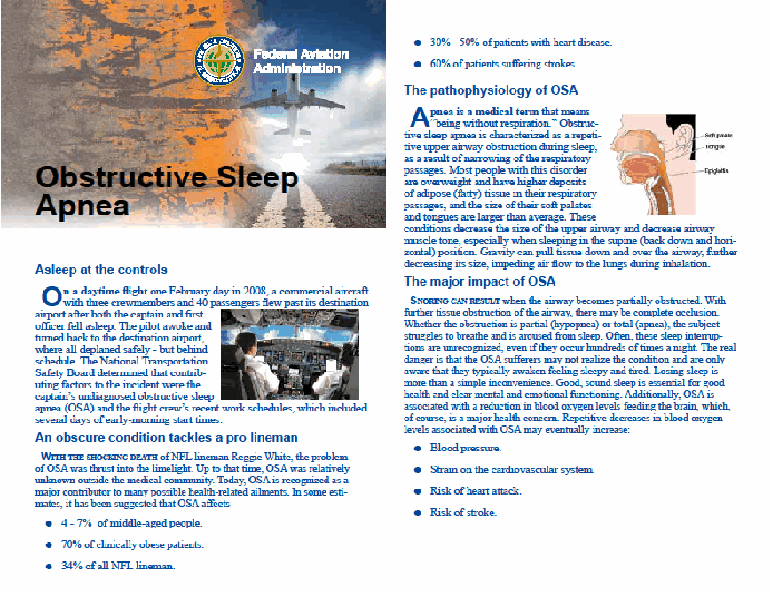
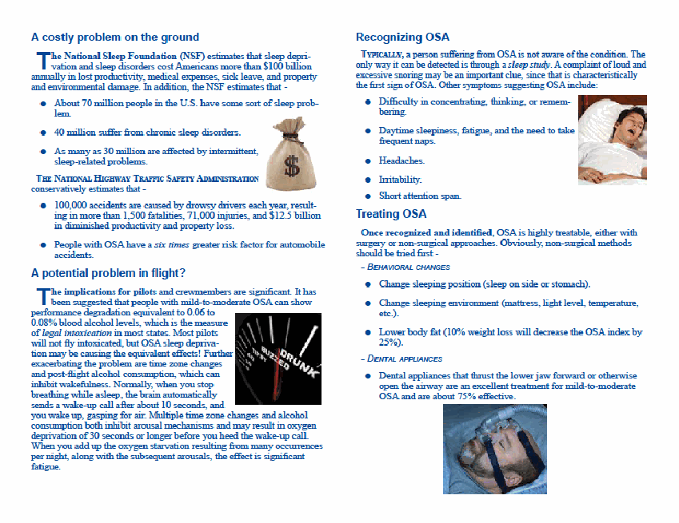
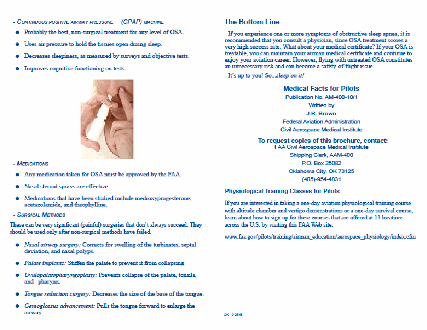

Protocol for Obstructive Sleep Apnea
(Updated 05/27/2026)
Decision Considerations Disease Protocols - Obstructive Sleep Apnea (OSA)
Guidance
- 3. OSA Protocol (General Information on OSA) and Decisions Consideration Table
- 4. Quick-Start for AMEs
- 5. OSA Flow Chart
- 6. AASM Tables 2 and 3
- 7. AME Actions
- 8. Specification Sheet A - Information Request
- 9. Specification Sheet B - Assessment Request
For AMEs Who Elect to Perform OSA Assessment
AME Assisted Special Issuance
Supplemental and Educational Information
- 15. Frequently Asked Questions (FAQs)
- 16. Instructional Video - OSA Screening: YouTube
- 17. BMI Calculator and Chart
- 18. Berlin Questionnaire
- 19. Epworth Sleepiness Scale
- 20. STOP BANG Questionnaire
- 21. FAA OSA Brochure
OSA TREATED STATUS REPORT
(Updated 05/27/2026)
Name _______________________________ Birthdate ________________
Applicant ID #_______________________ PI# _____________________
AIRMAN (Pilot/ATCS). Complete #1 & #2. Sign, date, and take to your physician or healthcare provider who treats your OSA. After completion, bring to your AME for upload into your FAA file.
#1. Initial review (First time reported to the FAA) Date of sleep study _____________
Recertification (I have an SI/SC)
#2. I have been using for OSA as prescribed: CPAP PAP Dental Device
I am tolerating therapy well and have no symptoms of OSA (e.g., daytime sleepiness, lack of mental attention or concentration, or cognitive impairment).
Signature ________________________________________ Date __________________________
*******************************************************************************************************************************
If you are the physician or provider treating this individual:
Review all clinical data, complete, sign, and date this report, or submit a current, detailed Clinical Progress Note that addresses ALL items below. For FAA purposes, initial untreated AHI of 15 or higher requires treatment with a PAP device.
Initial untreated Apnea Hypopnea Index (AHI) _________________
1. Is the PRIMARY diagnosis uncomplicated Obstructive Sleep Apnea (OSA)? If NO, identify diagnosis (central sleep apnea, restless legs syndrome, narcolepsy, insomnia, etc. See that disposition table). | YES | NO* |
2. Does the individual fly/work safely? For example, they do NOT use medication from the "Do Not Issue/Do Not Fly" list (e.g., trazodone, ropinirole) or any sleep aid such as (zolpidem, eszopiclone) chronically, more than two times per week, or do not comply with "no fly" periods. If not safe, document why and the medication name, dosage, frequency, and the reason for use. Diphenhydramine (Benadryl) is not encouraged as a sleep aid. If using, do not fly or perform Safety Related Duties for minimum of 60 hours after last use. | YES | NO* |
3. The current treatment is effective and well-tolerated with no symptoms such as daytime fatigue or cognitive impairment, and I have no clinical concerns. | YES | NO* |
4. Is there evidence of adequate compliance? For FAA purposes this means: • 75% or more of nights used; • 6-hours or more per night on average; current average ______ hours of sleep nightly; • AHI 5 or less (treated); • For a dental device, no symptoms and daily use of device. | YES | NO* |
*If any concerns with the quality or duration of sleep, or “NO*” answers you MUST DEFER or contact AAM. Upload any Clinical Progress Notes or PAP Data.
Physician or treating provider signature _______________________ Date _____________________________
Printed name or office name __________________________________ Office phone number ________________
AME Instructions. Upload this document as “OSA TREATED STATUS REPORT”.
If uploading the sleep study, use “OSA - Sleep Study”.
- If not currently on an authorization, the AME can issue a medical certificate (see OSA Protocol) if all items are in the “YES” column. Upload this page and the FAA may issue an authorization.
- If on an authorization, all items are in the “YES” column, and you have no concerns, issue a medical certificate (if otherwise qualified) with a time limitation of one year. (follow the authorization letter instructions)..
OSA Treated with PAP and Use of Two Machines (or more)
(Updated 09/29/2021)
Airmen with obstructive sleep apnea (OSA) treated with PAP (CPAP, BiPAP, or APAP) may use one machine at home and a separate, portable machine while traveling. Continuation of the Special Issuance is based on the CUMULATIVE time used.
To submit download data from two (or more) machines:
A. If all machines are used during a normal month (a continuous 30-day period):
1. Use the same one-year date range for each machine (if possible).
2. Submit device downloads from all machines used.
3. Clearly annotate on your 8500-8, a letter from you or on the status report from your treating physician, the number of machines used.
B. If a single machine is used for more than a month (a continuous 30-day period) and then additional machines are used:
1. Verify the compliance reports identify the date range used.
2. Submit all device downloads for the past year.
3. Clearly annotate on your 8500-8, a letter from you or on the status report from your treating physician, the number of machines used.
Successful continuation of Special Issuance will rely on combined usage time and the percentage of time used.
Target goals:
Minimum percent days with device usage | 75% |
Average usage (days used) | 6 hours |
Residual Apnea-Hypopnea Index (AHI) | 5 or less |
OSA Protocol (General Information on OSA) and Decisions Consideration Table
Sleep apnea has significant safety implications due to cognitive impairment secondary to the lack of restorative sleep and is disqualifying for airman medical certification. The condition is part of a group of sleep disorders with varied etiologies. Specifically, sleep apneas are characterized by abnormal respiration during sleep. The etiology may be obstructive, central or complex in nature. However, no matter the cause, the manifestations of this disordered breathing present safety risks that include, but are not limited to, excessive daytime sleepiness (daytime hypersomnolence), cardiac dysrhythmia, sudden cardiac death, personality disturbances, refractory hypertension and, as mentioned above, cognitive impairment. Certification may be considered once effective treatment is shown.
This protocol is designed to evaluate airmen who may be presently at risk for Obstructive Sleep Apnea (OSA) and to outline the certification requirements for airmen diagnosed with OSA. While this protocol focuses on OSA, the AME must also be mindful of other sleep-related disorders such as insomnia, parasomnias, sleep-related movement disorders (e.g., restless leg syndrome and periodic leg movement), central sleep apnea and other hypersomnias, circadian rhythm sleep disorders, etc., that may also interfere with restorative sleep. All sleep disorders are also potentially medically disqualifying if left untreated. If one of these other sleep-related disorders is initially identified during the examination, the AME must contact their RFS or AMCD for guidance.
Risk Information
The American Academy of Sleep Medicine has established the risk criteria (utilizing Tables 2 and 3) for OSA. When applying Table 2 and 3, the AME is expected to employ their clinical judgment.
Educational information for airmen can be found in the FAA Pilot Safety Brochure on Obstructive Sleep Apnea . Supplemental information for AMEs can be found in OSA Reference Materials , which can be found at end of the Protocols section.
Persons with physical findings such as a retrograde mandible, large tongue or tonsils, neuromuscular disorders, or connective tissue anomalies are at risk of OSA requiring treatment despite a normal or low BMI. OSA is also associated with conditions such as refractory hypertension requiring more than two medications for control, diabetes mellitus, and atrial fibrillation. Over 90% of individuals with a BMI of 40 or greater have OSA requiring treatment. Up to 30% of individuals with OSA have a BMI less than 30.
OSA QUICK-START for AMEs
The AME while performing the triage function must conclude one of six possible determinations. The AME is not required to perform the assessment or to comment on the presence or absence of OSA. For more information, view this instructional video on the screening process.
Step 1 - Determine into which group (1-6) the airman falls.
Applicant Previously Assessed:
Group 1: Has OSA diagnosis and is on Special Issuance. Reports to follow.
Group 2: Has OSA diagnosis OR has had previous OSA assessment. NOT on Special Issuance. Reports to follow.
Applicant Not at Risk:
Group 3: Determined to NOT be at risk for OSA at this examination.
Applicant at Risk/Severity to be assessed:
Group 4: Discuss OSA risk with airman and provide educational materials.
Group 5: At risk for OSA. AASM sleep apnea assessment required.
Applicant Risk/Severity Extremely High:
Group 6: Deferred. Immediate safety risk. AASM sleep apnea assessment required. Reports to follow.
Step 2 – Document findings in Block 60.
Step 3 – Check appropriate triage box in the AME Action Tab.
Step 4 – Issue, if otherwise qualified.
In assessing airmen for groups 4 and 5, the AME is expected to use their own clinical judgment, using AASM information, when making the triage decision.
Some AMEs have voiced the desire to perform the OSA assessment. While we do not recommend it, the AME may perform the OSA assessment provided that it is in accordance with the clinical practice guidelines established by the American Academy of Sleep Medicine.*
*If a sleep study is conducted, it must be interpreted by a sleep medicine specialist.
AME actions
AME Actions - On every exam, the AME must triage the applicant into one of 6 groups:
• If the applicant is on a Special Issuance Authorization for OSA (
), select Group 1 on the AME Action Tab:
- Follow AASI/SI for OSA
- Notate in Block 60; and
- Issue, if otherwise qualified
- If the applicant has had a prior sleep assessment ( Group/Box 2 of OSA flow chart ), select Group 2 on the AME Action Tab:
- If the airman is under treatment, provide the requirements of the AASI and advise the airman they must get the Authorization of Special Issuance;
- Give the applicant Specification Sheet A and advise that a letter will be sent from the Federal Air Surgeon requesting more information. The letter will state that the applicant has 90 days to provide the information to the FAA/AME;
- Notate in Box 60;
- Issue, if otherwise qualified
- If the applicant does not have an AASI/SI or has not had a previous assessment, the AME must:
- o Calculate BMI ; and
o Consider
AASM risk criteria Table 2 & 3
o If the AME determines the applicant is not currently at risk for OSA (Group/Box 3 of OSA flow chart), select Group 3 on the AME Action Tab:
- Notate in Block 60; and
- Issue, if otherwise qualified
- If the applicant is at risk for OSA but in the opinion of the AME the applicant is at low risk for OSA , the AME must ( Group/Box 4 of OSA flow chart ), select Group 4 on the AME Action Tab:
- Discuss OSA risks with applicant;
- Provide resource and educational information , as appropriate;
- Issue, if otherwise qualified; and
- Notate in Block 60
• If the applicant is at high risk for OSA, the AME must (
), select Group 5 on the AME Action Tab:
- Give the applicant Specification Sheet B and advise that a letter will be sent from the Federal Air Surgeon requesting more information. The letter will state that the applicant has 90 days to provide the information to the FAA/AME
- Notate in Block 60; and
- Issue, if otherwise qualified
• If the AME observes or the applicant reports symptoms which are severe enough to represent an immediate risk to aviation safety of the national airspace (
), select Group 6 on the AME Action Tab.
- Notate in Block 60. THE AME MUST DEFER
Obstructive Sleep Apnea Specification Sheet A: Information Request
(Updated 05/27/2026)
Your application for airman medical certification indicates that you have been treated or previously assessed for Obstructive Sleep Apnea (OSA).
You must provide the following information to the Aerospace Medical Certification Division (AMCD) or your Regional Flight Surgeon within 90 days:
A completed and signed OSA TREATED STATUS REPORT
OR
- All reports and records regarding your assessment for OSA by your primary care physician and/or a sleep specialist.
• If you are currently being treated, also include:
- A signed FAA Compliance with Treatment sheet or equivalent;
- The results and interpretive report of your most recent sleep study; and
- A current Detailed Clinical Progress Note from your treating physician indicating that OSA treatment is still effective.
For CPAP/ BIPAP/ APAP: A copy of the cumulative annual PAP device report. Target goal should show use for at least 75% of sleep periods and an average minimum of 6 hours use per sleep period.
For Dental Devices or for Positional Devices: Once Dental Devices with recording / monitoring capability are available, reports must be submitted.
Please submit the aforementioned information to your AME for upload into your FAA file using your reference number (PI, MID, or APP ID).
OBSTRUCTIVE SLEEP APNEA SPECIFICATION SHEET B: ASSESSMENT REQUEST (Updated 05/27/2026)
Due to your risk for Obstructive Sleep Apnea (OSA), and in order to review your eligibility for medical certification, you must provide the following information to the Aerospace Medical Certification Division (AMCD) or your Regional Flight Surgeon’s Office within 90 days for review:
- A current OSA assessment in accordance with the American Academy of Sleep Medicine (AASM) by your AME, personal physician, or a sleep medicine specialist.
- If it is determined that a sleep study is necessary, it must be either a Type I laboratory polysomnography or a Type II (7 channel) unattended home sleep test (HST) that provides comparable data and standards to laboratory diagnostic testing. It must be interpreted by a sleep medicine specialist and must include diagnosis and recommendation(s) for treatment, if any.
- In communities where a Level II HST is unavailable, the FAA will accept a level III HST. If the HST is positive for OSA, no further testing is necessary and treatment in accordance with the AASI must be followed. However, if the HST is equivocal, a higher-level test such as an in-lab sleep study will be needed unless a sleep medicine specialist determines no further study is necessary and documents the rationale.
If your sleep study is positive for a sleep-related disorder, you may not exercise the privileges of your medical certificate until you provide:
A completed and signed OSA TREATED STATUS REPORT
OR
- FAA Compliance with Treatment sheet or equivalent;
- A current Detailed Clinical Progress Note from your treating physician addressing compliance, tolerance of treatment, and resolution of OSA symptoms; and
- The results and interpretive report of your most recent sleep study.
If you are not diagnosed with a sleep-related disorder or the study was negative for a sleep-related disorder, you may continue to exercise the privileges of your medical certificate, but the evaluation report along with the results of any study, if conducted, must be sent to the FAA. All information provided will be reviewed and is subject to further FAA action.
Please submit the aforementioned information to your AME for upload into your FAA file using your reference number (PI, MID, or APP ID).
For AMEs Who Elect to Perform the OSA Assessment
Evaluating the risk of Obstructive Sleep Apnea (OSA) requires clinical judgment based on an integrated assessment of history, symptoms, AND physical/clinical findings. If an AME elects to perform the assessment for OSA, he/she must follow the American Academy of Sleep Medicine guidelines.
After completing the assessment, if the diagnosis of OSA is not made, the AME must sign and submit the AME Assessment Statement - OSA . If the AME confirms the presence of OSA, then full clinical note with test results, if performed, must be submitted.
History of findings that suggest increased risk of OSA include:
• Hypertension requiring more than 2 medications for control or refractory hypertension
• Type 2 Diabetes
• Atrial fibrillation or nocturnal dysrhythmias
• Congestive heart failure
• Stroke
• Pulmonary hypertension
• Motor vehicle accidents, especially those associated with sleepiness/drowsiness
• Under consideration for bariatric surgery
Symptoms that suggest an increased risk of OSA include:
• Snoring
• Daytime sleepiness
• Witnessed apneas
• Complaints of awakening with sensation of gasping or choking
• Non-refreshing sleep
• Frequent awakening (sleep fragmentation) or difficulty staying asleep (maintenance insomnia)
• Morning headaches
• Decreased concentration
• Problems or difficulty with memory or memory loss
• Irritability
Physical/clinical findings that suggest increased risk of OSA include:
• High score on an OSA screening questionnaire (e.g., Berlin, Epworth)
• Increased neck circumference (>17 inches in men, >16 inches in women)
• A Modified Mallampati score of 3 or 4 (assessment of the oral cavity)
• Retrognathia
• Lateral peritonsilar narrowing
• Macroglossia
• Tonsillar hypertrophy
• Elongated/enlarged uvula
• High arched/narrow hard palate
• Nasal abnormalities such as polyps, deviation and turbinate hypertrophy
• Obesity (AASM guidelines)
AME ASSESSMENT STATEMENT – OSA (Updated 06/29/2022)
AMEs who elect to perform an OSA assessment and find that the applicant does not meet the American Academy of Sleep Medicine (AASM) diagnostic criteria for OSA, must submit this statement to the FAA.
Airman/ Patient Name __________________ DOB: ____________
Reference Number (PI, MID, or App ID): ______________________
_____ (initial) I have performed an OSA assessment in accordance with AASM guidelines and have determined that there is no evidence of OSA requiring treatment at this time. (If a sleep study was performed it must be attached).
____________________________________________________________________
____________________________________________________________________
PHYSICIAN NAME ____________________________________________________
Address: ____________________________________________________________
Office Telephone Number: ______________________________________________
PHYSICIAN SIGNATURE________________________________________DATE____________
Mail this statement to:
Using Regular Mail (US Postal Service) or Using Special Mail (FedEx, UPS, etc.)
Federal Aviation Administration Federal Aviation Administration
Aerospace Medical Certification Division AAM-300 Aerospace Medical Certification Division AAM-300
Civil Aerospace Medical Institute Civil Aerospace Medical Institute, Bldg. 13
PO Box 25082 6700 S. MacArthur Blvd., Room 308
Oklahoma City, OK 73125-9867 Oklahoma City, OK 73169
FAA COMPLIANCE WITH TREATMENT
OBSTRUCTIVE SLEEP APNEA (OSA)
(Updated 10/25/2023)
I ____________________________ (print name) certify that (check one):
___ I have been using __________________ (CPAP/ Dental / or Positional Device) for OSA as prescribed. I am tolerating the therapy well and have no symptoms of OSA (e.g., daytime sleepiness or lack of mental attention or concentration).
___ I have been surgically treated for OSA and I have no symptoms of OSA (e.g., daytime sleepiness or lack of mental attention or concentration).
I understand and acknowledge that I will receive the new requirements for continuation of my special issuance or special consideration (ATCS) of Obstructive Sleep Apnea and I will comply with the requirements at my next FAA medical certificate renewal or reapplication.
Applicant Name: _________________________________________
Date of Birth: ____________________________________________
Reference Number: (PI, MID, or APP ID): _________________________
Applicant Signature _______________________________________ Date _______
OSA – FREQUENTLY ASKED QUESTIONS (FAQS)
(Updated: 02/24/2021)
GENERAL:
- 1. Where can I view the video explaining the process?
The instructional video for AMEs is available here .
- 2. Where can I find the specification sheets and educational material?
See OSA reference materials .
- 3. Does this process involve other sleep disorder conditions? (e.g., Period Limb Movement Disorder, narcolepsy, central sleep apnea, etc.)
No. This process is for obstructive sleep apnea only. If it is clear that the airman suffers from a different sleep disorder, DEFER and submit any supporting documentation for FAA decision.
TRIAGE:
- 4. I am not a sleep specialist. How am I supposed to determine if an airman is high risk enough to send for a sleep evaluation? How many risk factors must be present before additional testing is required?
The AME should triage the airman based on the FAA OSA Flow Chart, supporting clinical guidelines, and good clinical judgment to determine the appropriate category for the airman.
- 5. The airman was assessed 5 years ago for OSA but did not have a polysomnogram. The evaluation was negative. Is he required to have an updated sleep evaluation or a sleep study?
No. If there has been NO CHANGE in his/her risk factors, follow Group/Box 2 of the flow chart and submit a copy of the previous assessment. However, if there has been a change in risk factors (e.g., elevated BMI, new atrial fibrillation, refractory hypertension, etc.), triage using the flow chart to determine if the airman needs a repeat assessment.
- 6. If I mark the radio button (1-6) and have no concerns, do I still need to put notes in Block 60 regarding the OSA triage?
Yes. It is only required for Group/Box 4 to document that education was given. However, it may be useful to document the rationale for triage decisions, especially for Group/Box 2, 5, and 6.
SLEEP EVALUATION AND SLEEP STUDY:
- 7. Is a sleep evaluation the same as a sleep study?
No. Please reference the AASM guidelines . A sleep evaluation is needed when the triage process indicates that the airman is at high risk for OSA. The sleep evaluation is used to determine if a sleep study is warranted.
- 8. Do I have to turn in the “AME Assessment Statement” for every airman?
No. This statement page is only used by an AME who PERFORMS the sleep evaluation (in accordance with AASM guidelines) and finds that the airman does not have evidence of OSA. This is NOT to be used for the routine triage function.
- 9. What are the different types of sleep studies?
They are:
- Type I: Attended studies (full polysomnogram [PSG] in a sleep lab. • Type II: Unattended (home) studies using the same monitoring sensors as full PSGs (Type I).
- Type III*: Unattended (home) studies using devices that measure limited cardiopulmonary parameters (two respiratory variables [e.g., effort to
breathe, airflow], oxygen saturation, and a cardiac variable [e.g., heart rate or electrocardiogram].
- Type IV*: Unattended (home) studies using devices that measure only 1 or 2 parameters (typically oxygen saturation and heart rate, or in some
cases, just air flow).
*Please note, Type III and Type IV are NOT acceptable for FAA purposes.
- 10. Does the FAA require a specific type of sleep study if one is warranted?
Yes. The FAA requires that the test be either a Type I laboratory polysomnography or a Type II (7 channel) unattended home sleep test (HST) that provides comparable data and standards to laboratory diagnostic testing. It does not have to be a chain of custody study.
- 11. What if the doctor or insurance provider is only willing to do a level III Home Sleep Test (HST)?
In communities where a Level II HST is unavailable, the FAA will accept a level III HST. If the HST is positive for OSA, no further testing is necessary and treatment in accordance with the AASI must be followed. However, if the HST is equivocal, a higher-level test such as an in-lab sleep study will be needed unless a sleep medicine specialist determines no further study is necessary and documents the rationale.
- 12. If I do the sleep evaluation and determine the airman needs a sleep study, as the AME, can I interpret the sleep study?
The AME may only interpret the sleep study if he/she is a sleep medicine specialist.
CERTIFICATE, EXTENSION, AND DENIAL PROCESS:
- 13. If an airman is in Group/Box 5 (at risk for OSA) they have 90 days to comply with getting an evaluation. Does the AME issue a time-limited, 90-day certificate?
No. Issue a regular (not time limited) certificate, if the airman is otherwise qualified. The AME MAY NOT issue a time-limited certificate without an authorization from the FAA.
- 14. I evaluated the airman and triaged him into Group/ Box 5. He had a sleep study and is doing well on CPAP treatment. Does he have to wait for a time-limited certificate before he can return to flight duties?
No. Once the airman is compliant with and doing well on treatment, he has met the requirements for 14 CFR 61.53. The airman may return to flight status with the current certificate issued by the AME, PROVIDED that ALL the required information regarding OSA evaluation and treatment has been submitted to the FAA for review.
- 15. Once the AME issues a regular certificate, who is responsible for keeping track of the 90 days?
The FAA will keep track of the 90 days.
- 16. The airman has a prior SI/AASI for OSA that only asks for a current status report. Can I issue this year if he does not bring in any other information on the OSA?
Yes. The AME may issue this year based on the previous SI/AASI if those requirements were met.
- 17. Can the airman continue to submit only a current status report until his current AASI expires?
No. An airman currently on an SI/AASI for OSA will receive a new SI/AASI letter this year. At that point, he/she will have to comply with the new documentation requirements.
- 18. What if the airman cannot get a sleep evaluation in 90 days?
The airman may request a one-time, 30-day extension by phone by calling AMCD at (405) 954- 4821 and selecting Option 1 when prompted. They may also mail a request to AMCD (see Specification Sheet B for address) or by contacting their RFS office.
- 19. If I give the airman Specification Sheet A or B and he does not submit the required evaluation within 90 days and after the 30-day extension (if requested), what will happen?
The airman will receive a failure to provide (FTP) denial.
TREATMENT AND FOLLOW UP:
- 20. How long does an airman have to be on CPAP with a new diagnosis of OSA before they can return to flying?
The airman may submit the completed compliance statement and required documents to the FAA for review as soon as they are tolerating the therapy without difficulty and have no symptoms of OSA.
- 21. The airman has mild or moderate sleep apnea. Is he required to use CPAP?
In most cases an AHI of 16 or more will require CPAP.
- 22. If the airman has a sleep study and is diagnosed with OSA does he/she get a new certificate?
Yes. Once a diagnosis of OSA is established, a Special Issuance is required. When the airman submits the required supporting documents to the FAA, he/she will be evaluated for a Special Issuance.
- 23. If an airman has a previously unreported history of OSA being treated with CPAP, can the AME issue?
Yes. Issue a regular certificate (Group/Box 2), if the airman is otherwise qualified, and submit the required information for FAA decision.
- 24. What if the airman is high risk and has had a previous sleep study that was positive, but not one of the approved tests? He is currently on CPAP and doing well. Does he have to get a new sleep study?
Follow Group/Box 2 and submit the required information for FAA decision.
- 25. The airman had a sleep study in the past and did not have sleep apnea. It was not an approved test type. Will he have to get another sleep study?
The AME should follow the triage flow chart. If the airman is determined to be Group/Box 5 or 6, he/she will need a sleep evaluation. If a sleep study is warranted, it will need to be an approved test type (see FAQ #9). Submit the required information for FAA decision.
- 26. The airman has OSA and was on CPAP in the past. He has now lost weight and is only on a dental device. What do I do now?
Follow Group/Box 2 and submit the required information for FAA decision.
Measurement Units | BMI Formula and Calculation |
Pounds and inches | Formula: weight (lb) / [height (in)]2 x 703 Calculate BMI by dividing weight in pounds (lbs) by height in inches (in) squared and multiplying by a conversion factor of 703. Example: Weight = 150 lbs, Height = 5'5" (65") Calculation: [150 ÷ (65)2] x 703 = 24.96 |
Kilograms and meters (or centimeters) | Formula: weight (kg) / [height (m)]2 With the metric system, the formula for BMI is weight in kilograms divided by height in meters squared. Since height is commonly measured in centimeters, divide height in centimeters by 100 to obtain height in meters. Example: Weight = 68 kg, Height = 165 cm (1.65 m) Calculation: 68 ÷ (1.65)2 = 24.98 |
Berlin Questionnaire©
Height (m) Weight (kg) Age______ Male / Female _____
Please choose the correct response to each question.
Category 1 Category 2
1. Do you snore? □ a. Yes □ b. No □ c. Don’t know If you answered ‘yes’: | 6. How often do you feel tired or fatigued after your sleep? □ a. Almost every day □ b. 3-4 times per week □ c. 1-2 times per week □ d. 1-2 times per month □ e. Rarely or never |
2. Your snoring is: □ a. Slightly louder than breathing □ b. As loud as talking □ c. Louder than talking | 7. During your waking time, do you feel tired, fatigued or not up to par? □ a. Almost every day □ b. 3-4 times per week □ c. 1-2 times per week □ d. 1-2 times per month □ e. Rarely or never |
3. How often do you snore? □ a. Almost every day □ b. 3-4 times per week □ c. 1-2 times per week □ d. 1-2 times per month □ e. Rarely or never | 8. Have you ever nodded off or fallen asleep while driving a vehicle? □ a. Yes □ b. No If you answered ‘yes’: |
4. Has your snoring ever bothered other people? □ a. Yes □ b. No □ c. Don’t know | 9. How often does this occur? □ a. Almost every day □ b. 3-4 times per week □ c. 1-2 times per week □ d. 1-2 times per month □ e. Rarely or never |
5. Has anyone noticed that you stop breathing during your sleep? □ a. Almost every day □ b. 3-4 times per week □ c. 1-2 times per week □ d. 1-2 times per month □ □ e. Rarely or never | Category 3 10. Do you have high blood pressure? □ Yes □ No □ Don’t know |
Scoring Berlin Questionnaire
The questionnaire consists of 3 categories related to the risk of having sleep apnea. Patients can be classified into High Risk or Low Risk based on their responses to the individual items and their overall scores in the symptom categories.
Categories and Scoring:
Category 1: Items 1, 2, 3, 4, and 5;
Item 1: if ‘Yes’, assign 1 point
Item 2: if ‘c’ or ‘d’ is the response, assign 1 point
Item 3: if ‘a’ or ‘b’ is the response, assign 1 point
Item 4: if ‘a’ is the response, assign 1 point
Item 5: if ‘a’ or ‘b’ is the response, assign 2 points
Add points. Category 1 is positive if the total score is 2 or more points.
Category 2: items 6, 7, 8 (item 9 should be noted separately).
Item 6: if ‘a’ or ‘b’ is the response, assign 1 point
Item 7: if ‘a’ or ‘b’ is the response, assign 1 point
Item 8: if ‘a’ is the response, assign 1 point
Add points. Category 2 is positive if the total score is 2 or more points.
Category 3 is positive if the answer to item 10 is ‘Yes’ or if the BMI of the patient is greater than 30kg/m2.
(BMI is defined as weight (kg) divided by height (m) squared, i.e.., kg/m2).
High Risk: if there are 2 or more categories where the score is positive.
Low Risk: if there is only 1 or no categories where the score is positive.
Epworth Sleepiness Scale
The original version of the ESS was first published in 1991. However, it soon became clear that some people did not answer all the questions, for whatever reason. They may not have had much experience in some of the situations described in ESS items, and they may not have been able to provide an accurate assessment of their dozing behavior in those situations. However, if one question is not answered, the whole questionnaire is invalid. It is not possible to interpolate answers, and hence item-scores, for individual items. This meant that up to about 5 % of ESS scores were invalid in some series.
In 1997, an extra sentence of instructions was added to the ESS, as follows:
‘‘It is important that you answer each question as best you can’.
With this exhortation, nearly everyone was able to give an estimate of their dozing behavior in all ESS situations. As a result, the frequency of invalid ESS scores because of missed item- responses was reduced to much less than 1%.
The 1997 version of the ESS is now the standard one for use in English or any other language. It is available in pdf here.
STOP BANG Questionnaire
Height inches/cm:
Age:
Male/Female
BMI:
Weight lb/kg:
Collar size of shirt: S, M, L, XL, or inches/cm neck circumference:
1. Snoring
Do you snore loudly (louder than talking or loud enough to be heard through closed doors)?
Yes No
2. Tired
Do you often feel tired, fatigued, or sleepy during daytime? Yes No
3. Observed - Has anyone observed you stop breathing during your sleep?
Yes No
4. Blood pressure
Do you have or are you being treated for high blood pressure? Yes No
5. BMI -BMI more than 35 kg/m2?
Yes No
6. Age - Age over 50 years old?
Yes No
7. Neck circumference - Neck circumference greater than 40 cm?
Yes No
8. Gender – male?
Yes No
* Neck circumference is measured by staff
High risk of OSA: Answering yes to three or more items
Low risk of OSA: Answering yes to less than three items
Adapted from:
STOP Questionnaire
A Tool to Screen Patients for Obstructive Sleep Apnea
Frances Chung, F.R.C.P.C.,* Balaji Yegneswaran, M.B.B.S.,† Pu Liao, M.D.,‡ Sharon A. Chung, Ph.D.,§
Santhira Vairavanathan, M.B.B.S.,_ Sazzadul Islam, M.Sc.,_ Ali Khajehdehi, M.D.,† Colin M. Shapiro, F.R.C.P.C.#
Anesthesiology 2008; 108:812–21 Copyright © 2008, the American Society of Anesthesiologists, Inc. Lippincott Williams & Wilkins, Inc.



Source: FAA Guide for Aviation Medical Examiners, PDF pages 590–612. Always check the official FAA version.